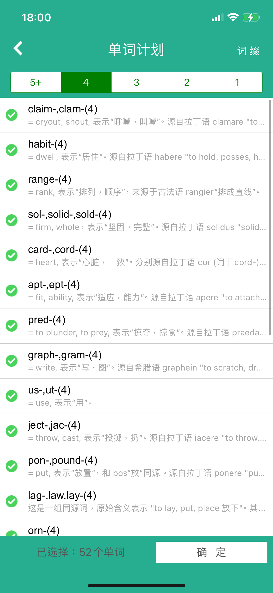

- 最下面的orn-: embellish表示装饰
- adorn装饰v.
- adorment也是装饰，装饰品
- ornament装饰n.
- vs. ornamentation vs. adorment，ornament倾向于指装饰品本身，ornamentation指的是更广泛的提高一个东西审美的装饰过程，adornment暗示装饰行为常伴随人的碰触
- "ornament" refers to the decorative element itself, "ornamentation" refers to the process of adding decorative elements, and "adornment" refers to the act of decorating or embellishing something, often with a personal touch. These terms are all related to enhancing visual appeal but may be used in different contexts or with slightly different emphases.
- vs. ornamentation vs. adorment，ornament倾向于指装饰品本身，ornamentation指的是更广泛的提高一个东西审美的装饰过程，adornment暗示装饰行为常伴随人的碰触
- ornate装饰的a.
- 这几个跟decorate区别？orn-这些装饰有好看的优雅的倾向，decorate = decor-(grace, ornament美丽，装饰)通用于增加了视觉装饰
- "Adorn" and "decorate" are often used interchangeably, but they can have slightly different connotations.
- In essence, while both terms involve enhancing the appearance of something, "adorn" often conveys a sense of adding beauty or elegance, while "decorate" is more generally used for adding visual elements or embellishments.
- 这几个跟decorate区别？orn-这些装饰有好看的优雅的倾向，decorate = decor-(grace, ornament美丽，装饰)通用于增加了视觉装饰
- suborn唆使伪证
- adorn装饰v.
- ject-, jac: throw, cast投掷，扔（没错cast除了cast a spell施法还有扔的意思cast a net/fishing line）
- adjacent = 扔在一起 = 毗邻
- reject = 扔回来 = 拒绝，这俩词居然是同一个词根
- conjecture = 猜测（之前查过区别）跟conjunction连词区分，2-29#17
- vs.suppose vs. guess vs. surmise
- while these terms all involve making assumptions or forming opinions without complete evidence, they each have nuances in meaning and usage that distinguish them from one another. The choice of word depends on the context and the level of certainty or formality desired in communication.都差不多，区分得头大
- vs.suppose vs. guess vs. surmise
- eject = e-出 + ject- 掷 = 扔出去 = 放逐驱逐；喷射
- 各种驱逐！exile，deport，expel
- All of these terms involve some form of removal or displacement, "eject" suggests a forceful expulsion,强制驱离 "exile" refers to being forced to live away from one's home or country,去其他国家（放逐） "expel" implies official removal often due to misconduct,因不端行为官方驱除 and "deport" involves the official removal of a person from a country.驱逐出境，驱逐出境，驱逐出境（deported due to DUI driving under the influence因酒驾被驱逐出境）
- 各种驱逐！exile，deport，expel
- sol-, solid-, sold-: firm, whole坚固，完整
- solemn = sol-全部的 + emn-(enn-, ann-: year年) = 每年都会发生的比如节日 = （庆祝）郑重庄严隆重
- solder = 使坚固的东西 = 焊接剂；焊接
- solidarity团结一致
- lay-, lag-, law-: lay, put, place
- layer居然是同词根，除了层外有产卵者的意思
- layman门外汉外行（还以为是接生者）门外汉就是这个词
- 接生人（助产士）正经英语：
- midwife, 或者man-midwife(In previous centuries, they were called man-midwives in English.)
- midhusband(the term midhusband is occasionally encountered, mostly as a joke.)
- male-midwife(Men who work as midwives are called midwives (or male midwives, if it is necessary to identify them further) or accoucheurs.)
- ledge vs. windowsill窗台
- both windowsills and ledges are horizontal surfaces that protrude from walls, a windowsill specifically refers to the surface at the bottom of a window opening, whereas a ledge is a more general term for any narrow horizontal projection or shelf, which may or may not be associated with a window.而ledge是一个更通用的术语，指的是任何狭窄的水平投影或架子，它可能与窗户相关，也可能不相关。（矿层，悬崖岩石岩架）
- pon-, pound-: put放置，和pos-同源，pos-, posit-放，刚学的，一起记
- component = 一起放 = 部件（都得放进来）
- compound = 一起放 = 化合物；混合物（同上^_^）
- proponent = pro-向前 + pon-放 = 想象把手往前放出来 = 支持者，拥护者
- exponent = ex-出 + pon-放置 = 放出来 = 讲解，说明，倡导；指数
- exponential, 指数的a.指数n.
- expound = （把内容）放出来 = 详解；阐述（跟上面似乎差不多）
- vs.exponent，expound是讲出来并解释，但exponent更倾向于演绎推崇一个想法或原理
- While both terms involve conveying information or advocating for something, "expound" focuses on providing a detailed explanation or interpretation, while "exponent" refers to a person or thing that represents or advocates for an idea or principle.
- vs.exponent，expound是讲出来并解释，但exponent更倾向于演绎推崇一个想法或原理
- propound提出供考虑
- cord-, card-: heart心脏，一致
- accrod = 一条心 = 一致符合v.；协议条约n.
- 符合 vs. conform vs. correspond
- 协议 vs. agreement vs. pact 条约 vs. pact vs. treaty
- chord（缩写于accord）弦；和音，圆的弦a chord of a circle
- cardiac = card-(+i)心脏 + -ac(pertaining to) = 心脏的；心脏病患者
- Cardiopulmonary Resuscitation心肺复苏CPR，cardio massage心脏按压，artificial respiration人工呼吸
- accrod = 一条心 = 一致符合v.；协议条约n.
- graph-, gram-: write写，graph这个词根居然是写不是图，跟text是纺织不是字一样有点反直觉
- topography = topo-地方，场所 + graph-写 = 地形学
- photograph？
- habit-: dwell居住
- inhabit = in-里 + habit-住 = 住里面 = 居住于；栖息于
- habitat是栖息地
- cohabit同居原来是这个词！
- pred-: plunder, prey掠夺；掠食
- predator = pred-掠夺 + ator-者 = 掠食者！天敌除了natural enemy就是predator /ˈpredətər/重音在前面
- prey是猎物，受害者
- depredate, depredation掠夺；破坏 /ˌdeprəˈdeɪʃən/
- range-: rank排序
- range范围n.；排列v.
- ranch原来牧场是这个词根（range本来就有牧场的意思）
- ept-, apt-: fit, ability适应，能力
- adept熟练，巧妙；内行
- proficient在2-29也讨论过？
- adapt使适应；改编。这俩词词根词缀读音都一样
- apt易于的；恰当的
- aptly适当地，适宜地
- adept熟练，巧妙；内行
- claim-, clam-: cryout, shout呼喊，叫喊
- claim vs. proclaim
- both "claim" and "proclaim" involve making statements, "claim" typically refers to asserting ownership or entitlement通常指主张所有权或权利（宣称）, while "proclaim" refers to announcing or declaring something publicly是指公开宣布或宣布事.declare
- clamor喧闹
- acclaim = 一再喊 = 赞扬
- vs. praise，acclaim更倾向于因为重要成就公开认可
- both "acclaim" and "praise" involve expressing positive recognition or admiration, "acclaim" tends to emphasize public or widespread acknowledgment, often for significant achievements, while "praise" can encompass both public and private expressions of approval or admiration for various reasons.
- vs. praise，acclaim更倾向于因为重要成就公开认可
- claim vs. proclaim
glamorous vs. charming
while both "glamorous" and "charming" convey positive attributes, "glamorous" emphasizes a more lavish, stylish, and attention-grabbing allure, while "charming" emphasizes a more genuine, endearing, and likable quality.
underlying v.
beneath under prep.
utilitarian功利主义的，功利主义者
proponent支持者，多看两遍这词，看着大秦帝国背词不小心点到斩了
supporter？